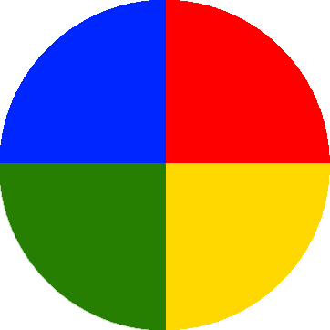

<ion-tabs>

    <ion-tab-bar slot="bottom">
        <ion-tab-button tab="disc">
            
        </ion-tab-button>

        <ion-tab-button tab="quiz">
            <ion-icon name="school-outline"></ion-icon>
        </ion-tab-button>

        <ion-tab-button tab="user-info">
            <ion-icon name="person-circle-outline"></ion-icon>
        </ion-tab-button>
    </ion-tab-bar>

</ion-tabs>